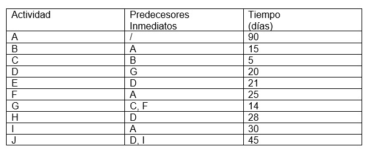

4.4 Planeación y control de proyectos: Método de la Ruta Crítica (CPM) y Técnica de Evaluación y Revisión de Programas (PERT).
CPM Y PERT pueden usarse para planear, programar y controlar una amplia variedad de proyectos:
Investigación y desarrollo de nuevos productos y procesos.
Construcción de plantas, edificios y autopistas.
Mantenimiento de equipo grande y complejo.
Diseño e instalación de sistemas nuevos.
En estos proyectos, los responsables o encargados deben programar y coordinar los diversos trabajos o actividades de modo que todo el proyecto se complete a tiempo. Debido a que los proyectos pueden tener muchas actividades, los gerentes de proyecto buscan procedimientos que les ayuden a responder cuestiones como las siguientes:
¿Cuál es el tiempo total que requerirá el proyecto?
¿Cuáles son las fechas programadas de inicio y finalización de cada actividad específica?
¿Cuáles actividades son críticas y deben completarse exactamente como se programó para mantener el proyecto conforme al programa?
¿Cuánto pueden demorarse las actividades no críticas antes de que causen un aumento en la duración del proyecto total?
PERT y CPM pueden ayudar a responder estas interrogantes [3]…
Para realizar los cálculos necesarios, definimos un evento como un punto en el tiempo en el cual se terminan ciertas actividades y se inician otras. En términos de la red, el evento corresponde a un nodo. Después, introducimos las siguientes definiciones:
□j=TIP (Tiempo de Inicio Más Próximo)
Δj=TTT (Tiempo de Terminación más Tardio)
Dij=Duración de la actividad (i,j)
Las definiciones de las primeras y las últimas ocurrencias del evento j se especifican en relación con las fechas de inicio y terminación de todo el proyecto
Los cálculos de la ruta crítica implican dos pasos: el paso hacia adelante determina los primeros tiempos de ocurrencia de los eventos y el paso hacia atrás calcula sus últimas fechas de ocurrencia.
Paso hacia adelante (primeras fechas de ocurrencia, TIP). En este paso, los cálculos empiezan en el nodo 1 y avanzan recursivamente hacia el nodo final n.
Paso inicial. Determine TIP1≡0 para indicar que el proyecto empieza en la fecha 0.
Paso general j. Dado que los nodos p, q,…, y v están unidos directamente con el nodo j por las actividades de entrada (p,j), (q,j), …, y v ya se han calculado, entonces la primera fecha de ocurrencia del evento j se calcula como:
TIPj=max{TIPp+Dpj,TIPq+Dqj,…TIPv+Dvj}
El paso adelante está completo cuando se calcula TIPnen el nodo n. Por definición, TIPj representa la ruta (duración) más larga al nodo j.
Paso hacia atrás (últimas fechas de ocurrencia, TTT). Después de la terminación del paso hacia adelante, los cálculos del paso hacia atrás empiezan en el nodo n y regresan recursivamente al nodo 1.
Paso inicial. Determinar TTTn≡TIPn para indicar que la primera y la última ocurrencia del último acontecimiento del proyecto son las mismas.
Paso general j. Dado que los nodos p, q,…, y v están unidos directamente al nodo j por las actividades de salida (j,p), (j,q), …, y (j,v) y que las últimas fechas de ocurrencia de los eventos (nodos) p, q,…, y v ya se han calculado, entonces la última fecha de ocurrencia del evento j se calcula como:
TTTj=min{TTTp-Djp,TTTq-Djq,…TTTv-Djv}
El paso hacia atrás está completo cuando se calcula TTT1en el nodo 1.
Basándonos en los cálculos anteriores, una actividad (i,j) será crítica si satisface tres condiciones.
TTTi=TIPi
TTTj=TIPj
TTTj-TTTi=TIPj-TIPi=Dij
Las tres condiciones plantean que la primera y la última fecha de ocurrencia de los eventos finales i y j son iguales y que la duración D_ijocupa exactamente su lapso. Por tanto, una actividad que no satisface las tres condiciones es no crítica.
Las actividades críticas de una red deben constituir una ruta ininterrumpida que abarca toda la red de principio a fin [5].
Ejercicio:
Klone Computers es un pequeño fabricante de computadoras personales que está por diseñar, manufacturar y comercializar la computadora de bolsillo Klonepalm. Las actividades y sus relaciones de precedencia se presentan a continuación:
Predecesores inmediatos de las actividades de la Klonepalm:

Elaboración propia
Elabore la red con las relaciones de precedencia y determine la ruta crítica.